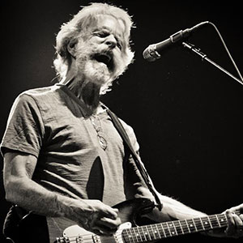

Bob Weir
Bob Weir, the bands lead rhythm guitarist started playing with the band when he was 17. Cofounder of the Warlocks, as the band grew, he became the co-lead-vocalist with Garcia and a songwriter as well. Weir was a high school drop out who became friends with Garcia and other members of the dead while hanging out at the Stanford coffeehouse scene, linking him with folk music and bluegrass through his association. Weir mixes combinations of arpeggios and few note chords with quick little runs up and down scales to essentially shape the feelings of a song.